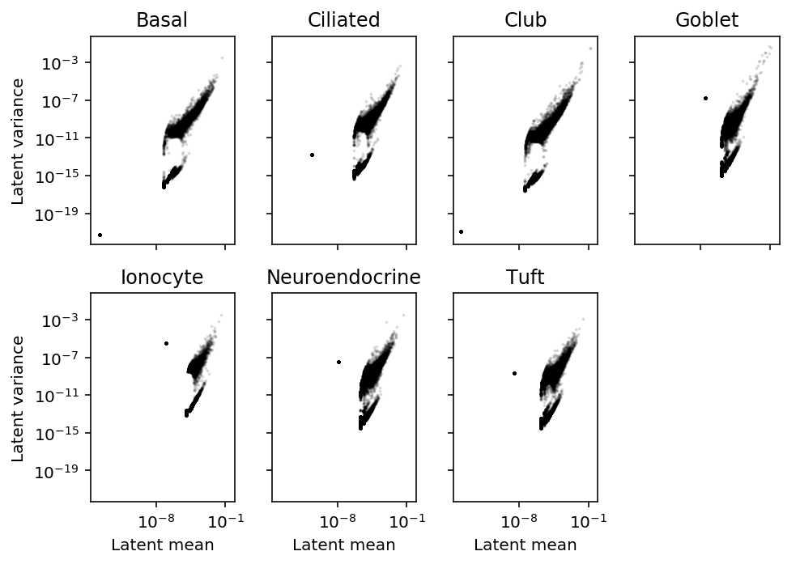
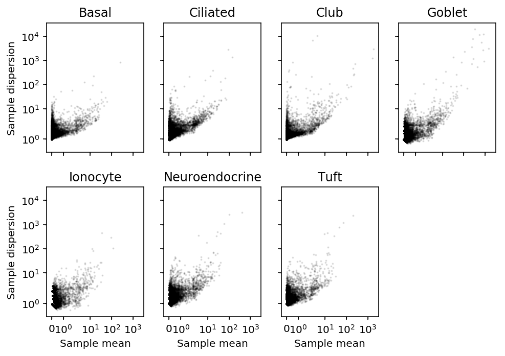
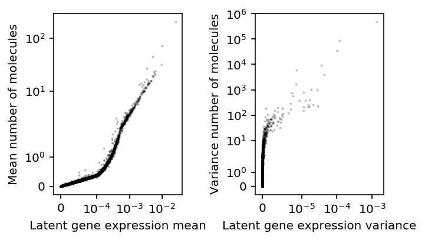
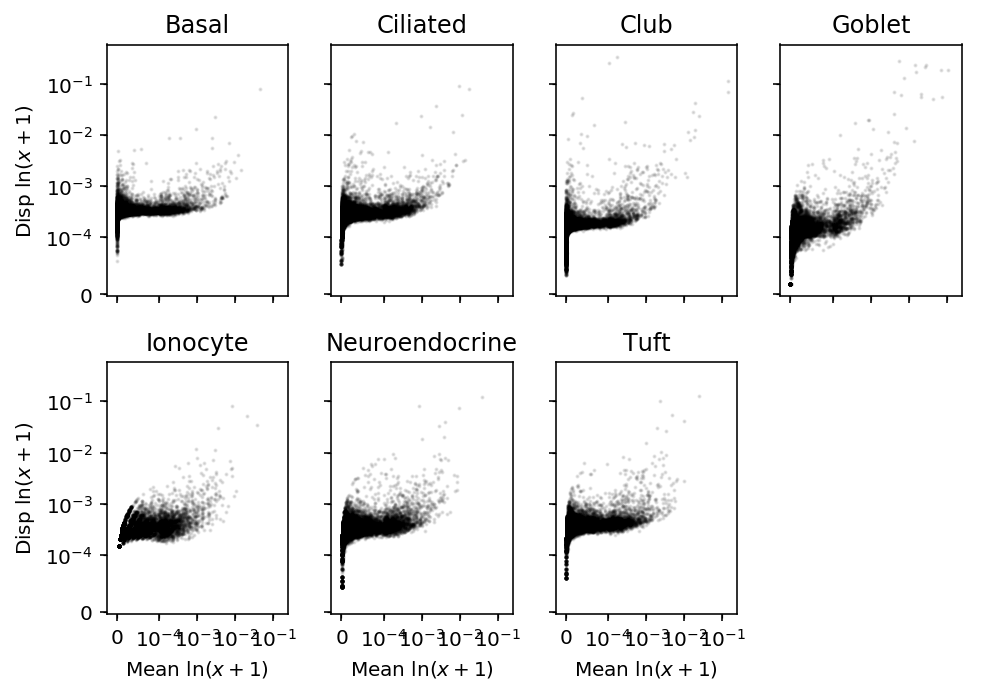
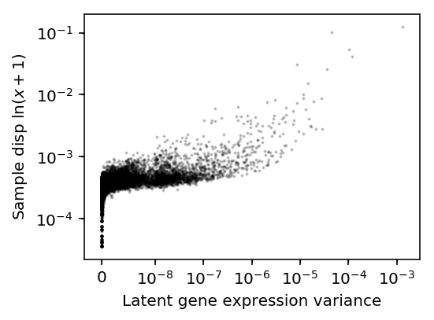
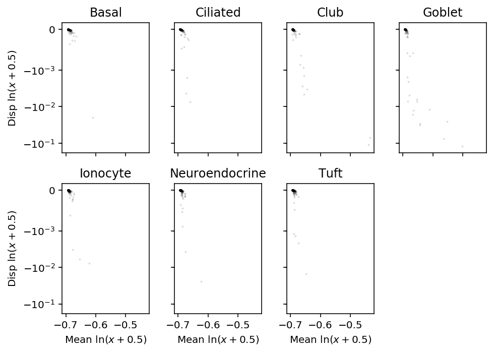

Deconvolution of Montoro et al.
Table of Contents
Introduction
We have previously argued that that distribution deconvolution is required to characterize the variance of gene expression. The essence of the argument is: suppose
\[ x_i \sim \mathrm{Poisson}(s \lambda_i) \]
where \(i\) indexes samples. Further suppose
\[ \lambda_i = \mu \]
Then, \(V[\lambda_i] = 0\), but \(V[x_i] = s\mu\). Clearly, the latter answer is wrong, because it reflects variance induced by sampling noise, not true biological variance of interest.
Here, we use distribution deconvolution to detect highly variable genes in the Drop-Seq of mouse lung epithelia (Montoro et al.), and demonstrate empirically that using naive approaches gives suboptimal (in the worst case, nonsense) results.
Setup
import numpy as np import pandas as pd import scqtl
%matplotlib inline %config InlineBackend.figure_formats = set(['retina'])
import matplotlib.pyplot as plt plt.rcParams['figure.facecolor'] = 'w'
Methods
Data
Download the data.
curl -sLO "ftp://ftp.ncbi.nlm.nih.gov/geo/series/GSE103nnn/GSE103354/suppl/GSE103354_Trachea_droplet_UMIcounts.txt.gz"
Shard the data.
s = None for i, chunk in enumerate(pd.read_table('/scratch/midway2/aksarkar/ideas/GSE103354_Trachea_droplet_UMIcounts.txt.gz', sep='\t', chunksize=5000)): chunk = chunk.T chunk.to_csv(f'/scratch/midway2/aksarkar/ideas/montoro-chunk{i}.txt.gz', sep='\t', compression='gzip') if s is None: s = chunk.sum(axis=1) else: s += chunk.sum(axis=1) s.to_csv('/scratch/midway2/aksarkar/ideas/montoro-size.txt', sep='\t')
Distribution deconvolution
Fit the model:
\[ x_{ijk} \sim \mathrm{Poisson}(s_{ij} \lambda_{ijk}) \]
where \(i\) indexes cell types, \(j\) indexes cells, \(k\) indexes genes.
\[ s_{ij} = \sum_k x_{ijk} \]
\[ \lambda_{ijk} \sim \pi_{ik} \delta_0(\cdot) + \mu_{ik} \mathrm{Gamma}(\phi_{ik}^{-1}, \phi_{ik}^{-1}) \]
import os task = int(os.environ['SLURM_ARRAY_TASK_ID']) x = pd.read_table(f'/scratch/midway2/aksarkar/ideas/montoro-chunk{task}.txt.gz', sep='\t', index_col=0) s = pd.read_table('/scratch/midway2/aksarkar/ideas/montoro-size.txt', sep='\t', index_col=0, header=None) design = np.zeros((x.shape[0], 1)) onehot = pd.Series(x.index).apply(lambda x: x.split('_')[-1]).str.get_dummies() init = scqtl.tf.fit( umi=x.values.astype(np.float32), onehot=onehot.values.astype(np.float32), size_factor=s.values.reshape(-1, 1).astype(np.float32), learning_rate=1e-3, max_epochs=30000) log_mu, log_phi, logodds, *_ = scqtl.tf.fit( umi=x.values.astype(np.float32), onehot=onehot.values.astype(np.float32), size_factor=s.values.reshape(-1, 1).astype(np.float32), learning_rate=1e-3, max_epochs=30000, warm_start=init[:3]) pd.DataFrame(log_mu, index=onehot.columns, columns=x.columns).to_csv(f'/scratch/midway2/aksarkar/ideas/montoro-log-mu-{task}.txt.gz', sep='\t', compression='gzip') pd.DataFrame(log_phi, index=onehot.columns, columns=x.columns).to_csv(f'/scratch/midway2/aksarkar/ideas/montoro-log-phi-{task}.txt.gz', sep='\t', compression='gzip') pd.DataFrame(logodds, index=onehot.columns, columns=x.columns).to_csv(f'/scratch/midway2/aksarkar/ideas/montoro-logodds-{task}.txt.gz', sep='\t', compression='gzip')
sbatch -a 0-3 --partition=gpu2 --gres=gpu:1 --mem=16G --time=4:00:00 --job-name=montoro --out=montoro.out #!/bin/bash source activate singlecell python <<EOF <<imports>> <<deconvolve>> EOF
Submitted batch job 60148824
Results
Distribution deconvolution
Read the results.
log_mu = pd.concat([pd.read_table(f'/scratch/midway2/aksarkar/ideas/montoro-log-mu-{i}.txt.gz', sep='\t', index_col=0) for i in range(4)], axis=1) log_phi = pd.concat([pd.read_table(f'/scratch/midway2/aksarkar/ideas/montoro-log-phi-{i}.txt.gz', sep='\t', index_col=0) for i in range(4)], axis=1) logodds = pd.concat([pd.read_table(f'/scratch/midway2/aksarkar/ideas/montoro-logodds-{i}.txt.gz', sep='\t', index_col=0) for i in range(4)], axis=1)
Highly variable genes
Estimate \(E_j[\lambda_{ijk}]\), \(V_j[\lambda_{ijk}]\) for each cell type \(i\) and gene \(k\).
# Important: log(sigmoid(x)) = -softplus(-x) mean = np.exp(log_mu - np.log1p(np.exp(logodds))) variance = np.exp(2 * log_mu + log_phi - np.log1p(np.exp(logodds))) + np.exp(-np.log1p(np.exp(logodds)) - np.log1p(np.exp(-logodds)) + 2 * log_mu)
Plot latent mean/variance relationship.
plt.clf() fig, ax = plt.subplots(2, 4, sharex=True, sharey=True) fig.set_size_inches(7, 5) for k, a in zip(mean.index, ax.ravel()): a.set_xscale('log') a.set_yscale('log') a.scatter(mean.loc[k], variance.loc[k], c='k', s=1, alpha=0.1) a.set_title(k) for a in ax: a[0].set_ylabel('Latent variance') for a in ax.T: a[-1].set_xlabel('Latent mean') ax[-1][-1].set_axis_off() fig.tight_layout()

Find the outlier genes.
mean.loc['Tuft', mean.loc['Tuft'] < 1e-8].index
Index(['Gm37381', 'Rp1', 'Rgs20', 'Npbwr1', 'Gm30414', 'Mybl1', '1700034P13Rik', 'Tcf24', 'Ppp1r42', 'Prex2', ... 'Emx2', 'Gm7102', 'mt-Co2', 'mt-Co3', 'mt-Nd3', 'Spry3', 'Tmlhe', 'AC125149.4', 'AC168977.2', 'AC168977.1'], dtype='object', length=5717)
These genes have no observed molecules in Tuft cells, so they are safe to ignore.
sample_mean.loc['Tuft', mean.loc['Tuft'] < 1e-8].describe()
count 5717.0 mean 0.0 std 0.0 min 0.0 25% 0.0 50% 0.0 75% 0.0 max 0.0 Name: Tuft, dtype: float64
Using this procedure, the genes with highest latent mean gene expression are also the genes with highest latent gene expression variance. This is corrected for the mean-variance relationship induced by Poisson sampling, so we do not need to correct for it again by estimating the dispersion. (There is a mean-variance relationship remaining in latent gene expression, which we argue is biologically plausible.) This is in direct contrast with existing approaches, which call HVG using Fano factor (ratio of variance to mean).
Comparison against count-based approach
Compare against dispersion approach, using sample moments of the counts.
# Important: cells x genes x = pd.read_table('/scratch/midway2/aksarkar/ideas/GSE103354_Trachea_droplet_UMIcounts.txt.gz', sep='\t', index_col=0).T
Estimate \(E_j[x_{ijk}]\), \(V_j[x_{ijk}]\) for each cell type \(i\) and gene \(k\).
celltypes = pd.Series(x.index).apply(lambda x: x.split('_')[-1]) sample_mean = x.groupby(celltypes.values).agg(np.mean, axis=0) sample_var = x.groupby(celltypes.values).agg(np.var, axis=0)
plt.clf() fig, ax = plt.subplots(2, 4, sharex=True, sharey=True) fig.set_size_inches(7, 5) for k, a in zip(sample_mean.index, ax.ravel()): a.set_xscale('symlog') a.set_yscale('symlog') a.scatter(sample_mean.loc[k], sample_var.loc[k] / sample_mean.loc[k], c='k', s=1, alpha=0.1) a.set_title(k) for a in ax: a[0].set_ylabel('Sample dispersion') for a in ax.T: a[-1].set_xlabel('Sample mean') ax[-1][-1].set_axis_off() fig.tight_layout()

Compare the deconvolution-based estimates to the count-based estimates for tuft cells.
plt.clf() fig, ax = plt.subplots(1, 2) fig.set_size_inches(5, 3) ax[0].set_xscale('symlog', linthreshx=1e-4) ax[0].set_yscale('symlog') ax[0].scatter(mean.loc['Tuft'], sample_mean.loc['Tuft'], c='k', s=1, alpha=0.2) ax[0].set_xlabel('Latent gene expression mean') ax[0].set_ylabel('Mean number of molecules') ax[1].set_xscale('symlog', linthreshx=1e-5) ax[1].set_yscale('symlog') ax[1].scatter(variance.loc['Tuft'], sample_var.loc['Tuft'], c='k', s=1, alpha=0.2) ax[1].set_xlabel('Latent gene expression variance') ax[1].set_ylabel('Variance number of molecules') fig.tight_layout()

There is disagreement about the ordering of variable genes, but e.g. the top 3 genes will be called the same.
Comparison against log-transformed data approach
Compare against dispersion approach, using sample moments of the log-transformed counts. Use pseudocount 1.
s = pd.read_table('/scratch/midway2/aksarkar/ideas/montoro-size.txt', sep='\t', index_col=0, header=None) t = x.div(s.iloc[:,0], axis=0)
log_mean = np.log(t + 1).groupby(celltypes.values).agg(np.mean, axis=0) log_var = np.log(t + 1).groupby(celltypes.values).agg(np.var, axis=0)
plt.clf() fig, ax = plt.subplots(2, 4, sharex=True, sharey=True) fig.set_size_inches(7, 5) for k, a in zip(log_mean.index, ax.ravel()): a.set_xscale('symlog', linthreshx=1e-4) a.set_yscale('symlog', linthreshy=1e-4) a.scatter(log_mean.loc[k], log_var.loc[k] / log_mean.loc[k], c='k', s=1, alpha=0.1) a.set_title(k) for a in ax: a[0].set_ylabel('Disp $\ln(x+1)$') for a in ax.T: a[-1].set_xlabel('Mean $\ln(x+1)$') ax[-1][-1].set_axis_off() fig.tight_layout()

Compare HVG called using latent variance versus sample dispersion of log-transformed data.
plt.clf() plt.gcf().set_size_inches(4, 3) plt.xscale('symlog', linthreshx=1e-8) plt.yscale('symlog', linthreshy=1e-4) plt.scatter(variance.loc['Tuft'], log_var.loc['Tuft'] / log_mean.loc['Tuft'], c='k', s=1, alpha=0.2) plt.xlabel('Latent gene expression variance') plt.ylabel('Sample disp $\ln(x + 1)$') plt.tight_layout()

There is disagreement about the ordering, but e.g. the top 4 genes are the same.
Use pseudocount 0.5.
log_mean = np.log(t + 0.5).groupby(celltypes.values).agg(np.mean, axis=0) log_var = np.log(t + 0.5).groupby(celltypes.values).agg(np.var, axis=0)
plt.clf() fig, ax = plt.subplots(2, 4, sharex=True, sharey=True) fig.set_size_inches(7, 5) for k, a in zip(log_mean.index, ax.ravel()): # a.set_xscale('symlog', linthreshx=1e-3) a.set_yscale('symlog', linthreshy=1e-3) a.scatter(log_mean.loc[k], log_var.loc[k] / log_mean.loc[k], c='k', s=1, alpha=0.1) a.set_title(k) for a in ax: a[0].set_ylabel('Disp $\ln(x+0.5)$') for a in ax.T: a[-1].set_xlabel('Mean $\ln(x+0.5)$') ax[-1][-1].set_axis_off() fig.tight_layout()

Clearly, this approach is flawed for pseudocount \(< 1\).